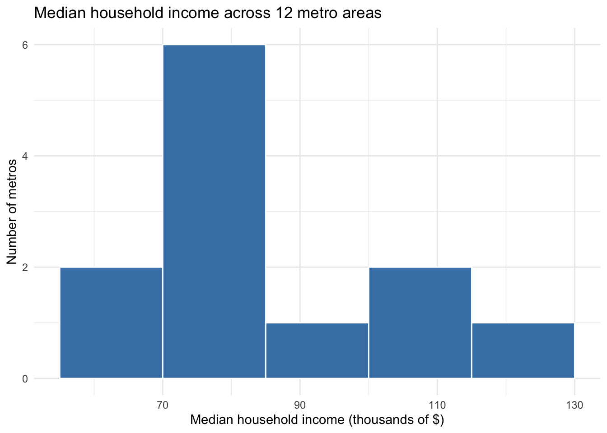
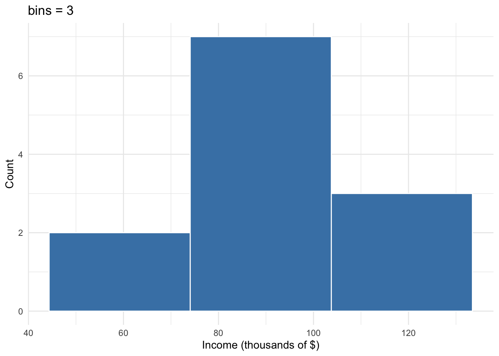
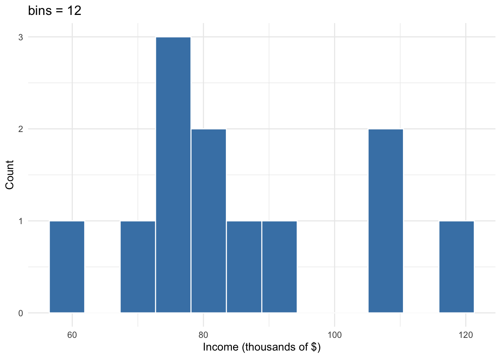

income <- c(
76.5,
91.2,
106.8,
78.9,
84.3,
82.1,
68.4,
75.8,
59.2,
76.1,
105.3,
118.6
)
income [1] 76.5 91.2 106.8 78.9 84.3 82.1 68.4 75.8 59.2 76.1 105.3 118.6ECON 300 · Applied Statistics for Economists
Instructor copy — do not distribute. Points: 50 total (Part 1: 14 · Part 2: 20 · Part 3: 10 · Part 4: 6). Covers Cohen Ch. 2–3, Sessions 2–3.
Grading principle from the problem set: when hand and code disagree, a correct explanation of why earns full credit. Deleting the hand work earns none.
| # | Variable | Level | A meaningless operation |
|---|---|---|---|
| a | Census region of a metro area | Nominal | Ranking regions or taking an “average region” (is the South “more” than the West?) |
| b | Credit score band: Poor / Fair / Good / Excellent | Ordinal | Subtracting or averaging bands; we can’t say Good − Fair equals Fair − Poor |
| c | Median household income in dollars | Ratio | None — a true zero exists, so differences and ratios (“twice as much income”) are meaningful |
| d | Year a bank branch opened | Interval | Ratios: a branch opened in 2010 is not “1.005 times” a branch opened in 2000. Year 0 is not “no time” |
| e | Unemployment rate, in percent | Ratio | None — 0% is a true zero, so “Detroit’s rate is 1.6× Washington’s” is meaningful |
| f | Federal Reserve district number (1–12) | Nominal | Averaging (a “mean district of 6.4”) or ordering (District 12 isn’t “more” than District 2) |
Grading (1 pt each). Full credit needs the correct level and a valid operation. For (c) and (e), accept “none” or a sensible caveat; also accept “interval” for (e) only if the student argues it well.
Part (f) is the trap. The values are numbers but are only labels; the numbering (1 = Boston, 12 = San Francisco) is an administrative convention. Students who say “ratio” or “interval” because the entries are numeric lose the point. That is the lesson of the question.
(a) Method B is more precise. It returns $54,300 every time, with zero spread. Method A ranges from $58,900 to $63,400 across samples. Method A is more accurate: its estimates are scattered around a center near $61,000, with no built-in reason to miss in a particular direction. Method B is systematically wrong because it drops part of the population by design, so it is biased, giving the same wrong answer each time.
(b) No. Surveying 5,000 households instead of 50 makes Method A roughly \(\sqrt{100} = 10\) times less variable. That’s a precision gain. It does nothing for Method B, whose problem isn’t sampling at all (it already covers every household); its error comes from the software’s exclusion rule. Sample size buys precision, not accuracy. More data reduces random error but leaves bias untouched.
Grading (2 pts each). In (a), the student must name a different method for each property and say why. In (b), the key sentence is that more data shrinks variance but cannot remove bias.
Optional discussion point: dropping only the top 1% should move a median very little, because the median depends only on the middle observation. A gap this large ($54k vs. ~$61k) hints that something else is also wrong with B. Give bonus credit for a student who notices this. Don’t penalize those who don’t.
(a) Two plausible populations:
(Other acceptable answers: all U.S. households; households in states where payday lending is legal; low-income households near a storefront.)
(b)
Grading (2 + 2). Any two populations that differ in who is counted earn full credit for (a). For (b), each conclusion must be specific to its population. “It would be more general” is not enough.
income <- c(
76.5,
91.2,
106.8,
78.9,
84.3,
82.1,
68.4,
75.8,
59.2,
76.1,
105.3,
118.6
)
income [1] 76.5 91.2 106.8 78.9 84.3 82.1 68.4 75.8 59.2 76.1 105.3 118.6(a) By hand.
\[ \begin{aligned} \sum_{i=1}^{12} x_i &= 76.5 + 91.2 + 106.8 + 78.9 + 84.3 + 82.1 \\ &\quad + 68.4 + 75.8 + 59.2 + 76.1 + 105.3 + 118.6 \\ &= 1023.2 \end{aligned} \]
\[ \bar{x} = \frac{1}{n}\sum_{i=1}^{n} x_i = \frac{1023.2}{12} = 85.2\overline{6} \approx 85.27 \]
Mean median household income is about $85,267.
(b) By code.
# From the definition: sum divided by n
n <- length(income)
total <- sum(income)
total / n[1] 85.26667# With the built-in
mean(income)[1] 85.26667(c) Both give 85.267, and they agree with the hand calculation.
Grading: (a) 3 pts. The twelve terms must be written out, not just “1023.2 / 12.” (b) 1 pt. (c) 1 pt. A common mistake is a sum of 1013.2 or 1033.2 (one carry dropped). If the student finds and names the error in (c), give full credit.
(a) By hand. Sorted:
| Position | 1 | 2 | 3 | 4 | 5 | 6 | 7 | 8 | 9 | 10 | 11 | 12 |
|---|---|---|---|---|---|---|---|---|---|---|---|---|
| Value | 59.2 | 68.4 | 75.8 | 76.1 | 76.5 | 78.9 | 82.1 | 84.3 | 91.2 | 105.3 | 106.8 | 118.6 |
With \(n = 12\), the middle positions are \(n/2 = 6\) and \(n/2 + 1 = 7\):
\[ \text{median} = \frac{x_{(6)} + x_{(7)}}{2} = \frac{78.9 + 82.1}{2} = \frac{161.0}{2} = 80.5 \]
(b) By code.
# Sort them so you can see what you did by hand
sort(income) [1] 59.2 68.4 75.8 76.1 76.5 78.9 82.1 84.3 91.2 105.3 106.8 118.6# The two middle positions for n = 12
sorted <- sort(income)
sorted[c(6, 7)][1] 78.9 82.1mean(sorted[c(6, 7)])[1] 80.5# The built-in
median(income)[1] 80.5(c) Mean (85.27) > median (80.5) means the distribution is right-skewed: a few high-income metros (105.3, 106.8, 118.6) pull the mean up but leave the median unchanged.
Grading: (a) 2 pts. Must show the sorted list and name positions 6 and 7. (b) 1 pt. (c) 1 pt. Must say “right” / “positive” skew or describe a long upper tail. Saying just “the data are skewed” is half credit.
(a) By hand. First the mean of the five values:
\[ \bar{x} = \frac{76.5 + 91.2 + 106.8 + 78.9 + 84.3}{5} = \frac{437.7}{5} = 87.54 \]
| \(x_i\) | \(x_i - \bar{x}\) | \((x_i - \bar{x})^2\) |
|---|---|---|
| 76.5 | −11.04 | 121.8816 |
| 91.2 | 3.66 | 13.3956 |
| 106.8 | 19.26 | 370.9476 |
| 78.9 | −8.64 | 74.6496 |
| 84.3 | −3.24 | 10.4976 |
| Sum | 0.00 | 591.3720 |
(The deviations summing to zero is a free arithmetic check. It always holds.)
\[ s^2 = \frac{1}{n-1}\sum_{i=1}^{n}(x_i - \bar{x})^2 = \frac{591.372}{4} = 147.843 \]
(b)
\[ s = \sqrt{147.843} \approx 12.159 \]
The standard deviation is about $12,159.
(c) By code.
first_five <- income[1:5]
# From the definition
xbar <- mean(first_five)
deviations <- first_five - xbar
squared_devs <- deviations^2
sum(squared_devs) / (length(first_five) - 1)[1] 147.843# Built-ins
var(first_five)[1] 147.843sd(first_five)[1] 12.15907(d) The \(n-1\) question.
\[ \frac{591.372}{5} = 118.274 \quad < \quad 147.843 \]
sum(squared_devs) / length(first_five)[1] 118.2744We measure each deviation from \(\bar{x}\), a number computed from the same five values. \(\bar{x}\) is by construction the point closest to the data, so deviations from it are systematically a little smaller than deviations from the true population mean \(\mu\). Dividing by \(n\) therefore underestimates the population variance on average. Dividing by \(n-1\) corrects for this: estimating \(\bar{x}\) used up one piece of information (one “degree of freedom”), so only \(n-1\) deviations are free to vary. The deviations must sum to zero, so the last one is fixed by the other four.
Grading: (a) 3 pts. Table must be complete, with the correct sum of squares (±0.01 for rounding). (b) 1 pt. (c) 1 pt. (d) 2 pts. Full credit requires the idea that dividing by \(n\) is biased downward because \(\bar{x}\) comes from the sample. “Because that’s the formula” or “it makes the number bigger” earns 0. Mentioning degrees of freedom alone, without the reason, earns 1.
(a) Range.
\[ \text{range} = \max - \min = 118.6 - 59.2 = 59.4 \]
(b) Quartiles by hand (median-of-halves method). Split the sorted list at the median into two halves of six:
\[ \text{IQR} = Q_3 - Q_1 = 98.25 - 75.95 = 22.30 \]
(c) By code.
range(income)[1] 59.2 118.6diff(range(income))[1] 59.4quantile(income, probs = c(0.25, 0.75)) 25% 75%
76.025 94.725 IQR(income)[1] 18.7(d) R gives \(Q_1 = 76.025\), \(Q_3 = 94.725\), IQR \(= 18.7\), not 22.3. This is not an error. There is more than one accepted definition of a sample quantile. ?quantile lists nine (type = 1 to 9). R’s default, type = 7, puts the \(p\)-th quantile at position \(1 + (n-1)p\) and interpolates between neighbors:
\[ \begin{aligned} Q_1&: \; 1 + 11(0.25) = 3.75 \;\Rightarrow\; 75.8 + 0.75(76.1 - 75.8) = 76.025 \\ Q_3&: \; 1 + 11(0.75) = 9.25 \;\Rightarrow\; 91.2 + 0.25(105.3 - 91.2) = 94.725 \end{aligned} \]
The hand method above is Tukey’s “hinges,” which R reports through fivenum(). It reproduces the hand answer exactly:
fivenum(income) # min, lower hinge, median, upper hinge, max[1] 59.20 75.95 80.50 98.25 118.60fivenum(income)[4] - fivenum(income)[2][1] 22.3Grading: (a) 1 pt. (b) 1 pt. Accept any defensible hand method (e.g., some textbooks include/exclude the median, or use position \((n+1)p\), giving \(Q_1 = 75.875\), \(Q_3 = 101.775\)). The method must be applied consistently. (c) 1 pt. (d) 1 pt. Must say that quantiles have multiple definitions / interpolation rules, and that R’s default differs from the hand method. fivenum() is not required.
metros <- tibble(
metro = c(
"Atlanta",
"Baltimore",
"Boston",
"Charlotte",
"Chicago",
"Dallas",
"Detroit",
"Houston",
"Memphis",
"Phoenix",
"Seattle",
"Washington"
),
region = c(
"South",
"South",
"Northeast",
"South",
"Midwest",
"South",
"Midwest",
"South",
"South",
"West",
"West",
"South"
),
population = c(6.1, 2.8, 4.9, 2.7, 9.5, 7.6, 4.3, 7.1, 1.3, 4.9, 4.0, 6.3) *
1e6,
med_income = c(
76500,
91200,
106800,
78900,
84300,
82100,
68400,
75800,
59200,
76100,
105300,
118600
),
unemployment = c(3.4, 3.9, 3.1, 3.3, 4.2, 3.6, 4.8, 4.1, 4.6, 3.5, 3.8, 2.9)
)metros |>
filter(population > 4e6) |>
mutate(income_k = med_income / 1000) |>
select(metro, region, income_k) |>
arrange(desc(income_k))# A tibble: 8 × 3
metro region income_k
<chr> <chr> <dbl>
1 Washington South 119.
2 Boston Northeast 107.
3 Chicago Midwest 84.3
4 Dallas South 82.1
5 Atlanta South 76.5
6 Phoenix West 76.1
7 Houston South 75.8
8 Detroit Midwest 68.4Eight metros remain. Seattle (exactly 4.0 million) is correctly dropped because the condition is above 4 million.
Grading (5 pts): 1 pt per verb (filter, mutate, select, arrange(desc())), plus 1 pt for a single piped expression that runs. Common errors:
population > 4 (forgets the scale) returns all 12 rows. −1.>= keeps Seattle (9 rows). −1, unless the student flags it as a deliberate choice.arrange(income_k) sorts ascending. −1.mutate / select may vary as long as income_k exists before it’s selected. No penalty.regional <- metros |>
group_by(region) |>
summarise(
n = n(),
total_pop = sum(population),
weighted_inc = sum(population * med_income) / sum(population)
)
regional# A tibble: 4 × 4
region n total_pop weighted_inc
<chr> <int> <dbl> <dbl>
1 Midwest 2 13800000 79346.
2 Northeast 1 4900000 106800
3 South 7 33900000 86175.
4 West 2 8900000 89224.weighted.mean(med_income, w = population) is an equally good answer for the last line.
Weighted vs. unweighted comparison:
metros |>
group_by(region) |>
summarise(
unweighted_inc = mean(med_income),
weighted_inc = weighted.mean(med_income, w = population)
) |>
mutate(difference = weighted_inc - unweighted_inc)# A tibble: 4 × 4
region unweighted_inc weighted_inc difference
<chr> <dbl> <dbl> <dbl>
1 Midwest 76350 79346. 2996.
2 Northeast 106800 106800 0
3 South 83186. 86175. 2989.
4 West 90700 89224. -1476.Answer: The Midwest changes most (about +$3,000), with the South essentially tied (about +$2,990).
The general lesson: weighting matters exactly when size is correlated with the outcome. The unweighted mean answers “what does a typical metro look like?”, while the weighted mean answers “what does the typical person in this region’s metros live in?”
Grading: Code 3 pts (1 per summary column; n() / length() both fine). Comparison 2 pts. Accept “Midwest” or “South” as the biggest mover (the gap is under $10), as long as the explanation correctly links metro size to income. A student who notices the Northeast can’t move earns full credit even with a thinner explanation elsewhere.
(a) Frequency table.
| Bin (thousands $) | Values | Frequency |
|---|---|---|
| \([55, 70)\) | 59.2, 68.4 | 2 |
| \([70, 85)\) | 75.8, 76.1, 76.5, 78.9, 82.1, 84.3 | 6 |
| \([85, 100)\) | 91.2 | 1 |
| \([100, 115)\) | 105.3, 106.8 | 2 |
| \([115, 130)\) | 118.6 | 1 |
| Total | 12 |
(b) Description. The \([70, 85)\) bin is clearly tallest, holding half the metros. The distribution is not symmetric. It has a short left side and a longer right tail stretching out to the $100k+ metros. This matches Q2.2: mean > median, right skew.
(c) By code.
income_df <- tibble(income = income)
ggplot(income_df, aes(x = income)) +
geom_histogram(
breaks = seq(55, 130, by = 15),
closed = "left", # match the [a, b) bins in the hand table
fill = "steelblue",
color = "white"
) +
labs(
title = "Median household income across 12 metro areas",
x = "Median household income (thousands of $)",
y = "Number of metros"
) +
theme_minimal()
(d) Changing the bin count.
ggplot(income_df, aes(x = income)) +
geom_histogram(bins = 3, fill = "steelblue", color = "white") +
labs(title = "bins = 3", x = "Income (thousands of $)", y = "Count") +
theme_minimal()
ggplot(income_df, aes(x = income)) +
geom_histogram(bins = 12, fill = "steelblue", color = "white") +
labs(title = "bins = 12", x = "Income (thousands of $)", y = "Count") +
theme_minimal()

With 3 bins, the bins are so wide that the dense $70–85k cluster merges with its neighbors, and the right tail is absorbed into a single bar. The skew is blurred and the shape is oversmoothed. With 12 bins for 12 observations, most bars are 0, 1, or 2 tall, so the plot shows noise (individual points), not a shape. The same data can look quite different depending on an arbitrary choice. So a histogram is evidence only when its message survives a reasonable range of bin widths.
Grading: (a) 2 pts. Counts must sum to 12. (b) 1 pt. Must identify \([70,85)\) as tallest and the right tail. (c) 2 pts. Must use the specified breaks; bins = 5 alone is −1 since R picks its own edges. Omitting closed = "left" is not penalized: no value falls on a boundary, so the counts are identical. Labels should be filled in. (d) 1 pt. Must say what each extreme hides and draw the general lesson about bin choice.
| Question | Key result |
|---|---|
| 1.1 | Nominal, ordinal, ratio, interval, ratio, nominal |
| 1.2 | B precise (biased); A accurate. Larger n fixes variance, not bias |
| 2.1 | \(\sum x_i = 1023.2\), \(\bar{x} = 85.27\) |
| 2.2 | Median \(= (78.9 + 82.1)/2 = 80.5\); right-skewed |
| 2.3 | \(\bar{x} = 87.54\), SS \(= 591.372\), \(s^2 = 147.843\), \(s = 12.159\); with \(n\): 118.274 |
| 2.4 | Range 59.4; hand IQR 22.3 (75.95, 98.25); R type = 7 IQR 18.7 (76.025, 94.725) |
| 3.1 | 8 rows, Washington → Detroit; Seattle excluded |
| 3.2 | Weighted: Midwest 79,346 · Northeast 106,800 · South 86,175 · West 89,224 |
| 4.1 | Bin counts 2, 6, 1, 2, 1 |